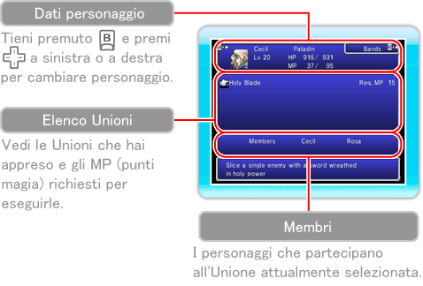

Qui puoi vedere l'effetto delle Unioni che hai imparato e i personaggi richiesti per eseguirle. Seleziona un'Unione e poi subito un'altra per scambiarle di posizione nell'elenco. Per maggiori informazioni sulle Unioni, consulta pagina 22.

Holy Blade
(Lama sacra)
|
MP: 15
Membri: Cecil, Rosa |
|
Colpisce un nemico singolo con una spada intrisa di potere sacro. |
|
Machine Break
(Guasto meccanico) |
MP: 7
Membri: Cecil, Cid |
|
Provoca gravi danni a tutti i nemici meccanici. |
|
X Chaser
(Cacciatore X) |
MP: 12
Membri: Rosa, Cid |
Sferra un colpo critico a un nemico singolo. |
|
Divine Heal
(Guarigione divina) |
MP: 28
Membri: Ceodore, Rosa |
Ripristina gli HP (punti vita) dei membri del gruppo grazie agli influssi benefici della luna. |
|
Rocket Launcher
(Lanciarazzi) |
MP: 12
Membri: Ceodore, Cid |
Incanta le armi con il potere del fuoco per attaccare il nemico. |